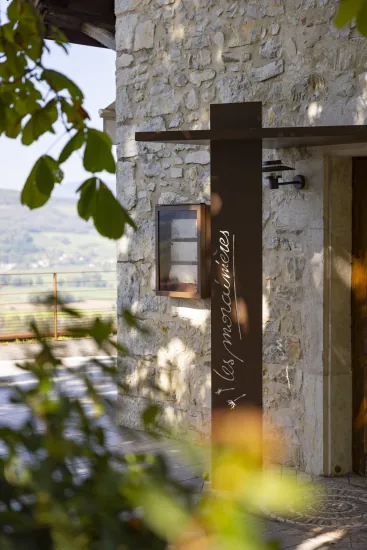

I. Photographie : les-morainieres.comSaint-Pierre-de-Curtille · 3,4 km de la table
La Maison des Morainières
La maison d'hôtes des Arnoult. Six chambres aux noms d'herbes de cuisine, et un chauffeur qui vous dépose à la table — puis vous ramène.
Chambres
6
Double / nuit
€250–320
Distance
3,4 km
Navette
Incluse
À 68 route du Grand Bois, six chambres de 35–45 m² baptisées Marjolaine, Mélisse, Oxalys, Reine des Prés, Pimprenelle et Achillée ; piscine extérieure chauffée ; petit-déjeuner préparé par la brigade [3]. Tarif €250–320 la double [4]. On réserve la chambre par le même numéro que la table.
La seule maison de la sélection où vous ne paierez ni taxi ni stress de fin de soirée : un chauffeur fait l'aller-retour pour chaque service, déjeuner comme dîner.
+33 4 79 44 03 20
Réserver →